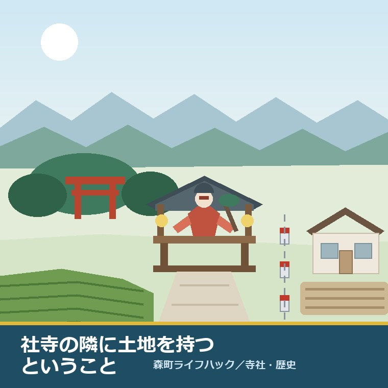
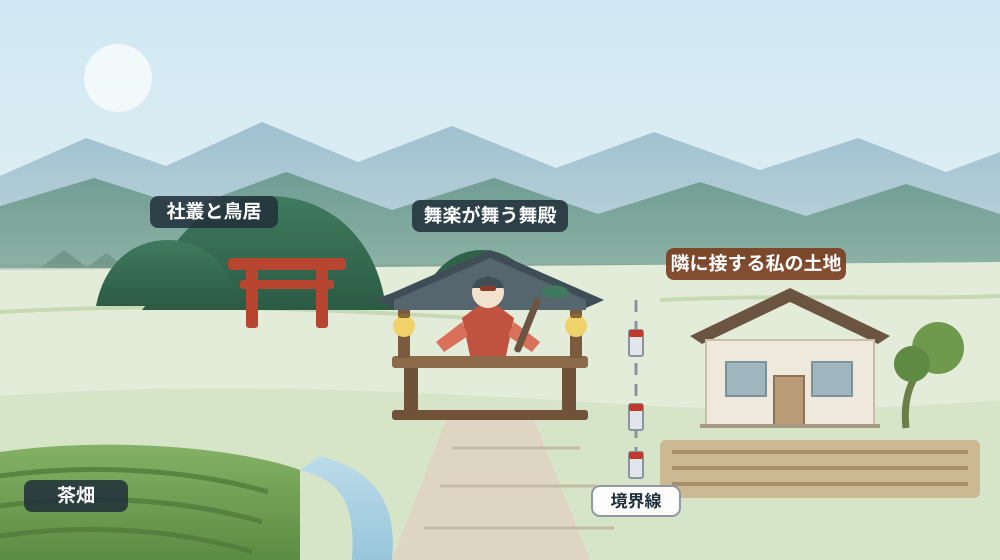
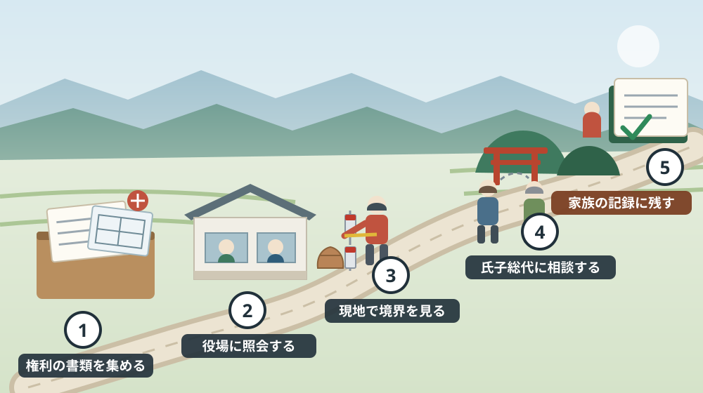

国指定の舞楽が三件ある町で、社寺の隣に土地を持つということ

この記事の要点
Q. 神社の隣の土地です。文化財の指定があると、家を建てたり売ったりできないのでしょうか。
A. 静岡県周智郡森町（遠州森町）の公式ページで確認できる範囲では、舞楽が国の重要無形民俗文化財であることを理由に、隣接する土地の売買や建築を制限するという記載は見当たりません（2026年8月5日確認）。舞楽の指定は「舞」という無形の技芸に対するものだからです。一方で、社寺のまわりの土地で実際に効いてくるのは別の制度で、埋蔵文化財の届出（工事着手の60日前まで）、森町景観条例に基づく届出、1,000平方メートル以上の土地利用事業の事前承認の三つが代表格です。まず社会教育課 文化振興係（0538-85-1114）に包蔵地の照会をし、次に建設課 都市計画係（0538-85-6322）に規模の基準を聞く。この順番が最短です。
森町で土地や実家のご相談をお受けしていると、住所を伺う前に「うちは神社の隣なんですよ」と言われることがあります。一宮、天宮、飯田。地区名より先に、社の名前で場所が通じてしまう。それが森町という土地の性格だと思います。
そして、そのあとにほぼ必ず続くのが、この一言です。「文化財だから、勝手にいじれないんですよね」。
この不安は、まったく根拠のないものではありません。森町には国と県が指定した文化財が実際に集まっており、社寺そのものが指定を受けている例もあります。ただ、「文化財がある」ことと「あなたの土地に制限がかかる」ことは、制度としては別の話です。混ぜたまま考えると、必要のない遠慮をしたり、逆に本当に必要な届出を見落としたりします。
この記事は、社寺の隣、門前、参道沿いに土地や実家を持っている方、そういう土地を相続した方に向けて書いています。何が公式に確認できて、何がまだ確認できないのかを分け、今日から動ける順番まで落とし込みます。
公式情報から確定できること
まず、森町公式サイトの「文化財」のページ（更新日 2019年3月1日）に載っている国指定文化財の一覧を見ます。ここには次の行が並んでいます。
| 種別 | 名称 | 指定年月日 | 所在・所有 |
|---|---|---|---|
| 民俗 | 【遠江森町の舞楽】小國神社十二段舞楽 | 昭和57年1月14日 | 森町一宮・小國神社 |
| 民俗 | 【遠江森町の舞楽】天宮神社十二段舞楽 | 昭和57年1月14日 | 森町天宮・天宮神社 |
| 民俗 | 【遠江森町の舞楽】山名神社天王祭舞楽 | 昭和57年1月14日 | 森町飯田・山名神社 |
| 建造物 | 友田家住宅 | 昭和48年6月2日 | 森町亀久保 |
舞楽の三行は、いずれも指定年月日が同じ昭和57年1月14日です。所在は一宮、天宮、飯田と、町内の別々の地区に分かれています。三つの社が、それぞれ別の日程で、それぞれの舞を伝えてきたということが、この表からだけでも読み取れます。
ここで一つ、押さえておきたい違いがあります。文化庁の文化遺産オンラインで同じものを引くと、指定名称は「遠江森町の舞楽」という一件として登録されており、保護団体として「小国神社古式舞楽保存会、山名神社天王祭舞楽保存会、天宮神社十二段舞楽保存会」の三団体が並んでいます（指定 1982年1月14日、2026年8月5日確認）。
つまり、町の一覧では三行に分けて書かれ、国のデータベースでは一件の指定名称の下に三社がまとまっている、ということです。どちらかが誤りというわけではなく、数え方の粒度が違います。「三件」と聞いても「一件」と聞いても、指しているものは同じ三社の舞楽です。町史の解説などで両方の言い方に出会っても、戸惑わないでください。
県が指定した文化財にも、社寺そのものが含まれています。同じ一覧には、天宮神社本殿及び拝殿（建造物・昭和31年5月24日）、山名神社本殿附棟礼（建造物・平成12年11月17日）、天宮神社のナギ（天然記念物・昭和29年1月30日）、小國神社の田遊び（民俗・昭和35年4月15日）などが載っています。
この点は、隣に土地を持つ立場では意味を持ちます。舞楽は無形の技芸ですが、本殿や拝殿、境内の樹木は「そこにある物」として指定されているからです。隣地で重機を入れる、擁壁を積む、大きな樹を切る、といった話になったとき、配慮の対象が現実に隣接している可能性があります。
町も、この三社の舞楽を町の顔として扱っています。観光振興係（0538-85-6316）のお知らせには、天宮神社・小國神社・山名神社の舞楽の紹介動画を順に公開する日程とともに、「遠江森町の舞楽」として国の重要無形民俗文化財に指定されている旨が記載されています（更新日 2025年1月27日）。
さらに、町は文化財保護法第183条の3に基づく法定計画として「森町文化財保存活用地域計画」を進めています。案についての意見募集は令和7年11月28日から12月12日まで行われ、募集自体は終了しています。認定後に結果を公表する予定とされています（同ページ更新日 2026年7月16日、2026年8月5日確認）。
そのうえで、確認できなかったことも書いておきます。舞楽が国の重要無形民俗文化財であることを理由に、周辺の土地の売買・建築・造成を制限するという記載は、森町公式サイトでは見つけられませんでした。本サイトは「制限がない」と断定はしません。ただ、少なくとも公表資料の上では、そのような規制の入口は確認できない、というのが今日時点の事実です。

この絵で描きたかったのは、距離の近さです。社寺の隣というのは、風景としては境内の続きに見えても、権利の上では完全に別の土地だということ。そして、その境目を示しているのが杭と図面だけだということです。
森町での暮らしと、土地の手続きへの影響
では、社寺の隣で実際に効いてくる制度は何か。町公式ページの記載から、順に見ていきます。
一つ目は埋蔵文化財です。森町の「埋蔵文化財の取り扱いについて」（更新日 2025年10月9日）には、周知の埋蔵文化財包蔵地の中で掘削作業を行う場合、文化財保護法第93条第1項に基づく届出を、工事着手の60日前までに町教育委員会を経由して県へ提出する必要がある、と書かれています。
この「60日前」は、段取りの上でかなり大きな数字です。解体、造成、外構、地盤改良。いずれも見積りから着工までを1か月程度で組む方が多い工程ですが、包蔵地に当たれば、そこに2か月分の余白を先に確保しておかなければなりません。相続や売却の期限が絡んでいるときほど、早い段階で当たりを取っておく価値があります。
照会の方法も同じページにあります。役場北館1階の窓口へ資料と住宅地図を持参する、ファックス（0538-86-4419）で送る、メールで送る、の三通りです。遺跡の所在がはっきりしない場所は、試掘確認調査依頼書を出して確かめます。担当は社会教育課 文化振興係（0538-85-1114）です。
社寺の周辺は、人が長く住み、長く祈ってきた場所です。地中に何かが残っている可能性は、はじめから頭に入れておくほうが現実的だと私は考えます。
二つ目は景観です。町公式の「森町景観条例に基づく届出について」（更新日 2023年3月27日）には、令和5年4月1日の条例施行に伴い、一定規模以上の建築等を行う場合は同条例および景観法第16条に基づく届出が必要である旨が書かれています。様式は第2号（行為届出書）、第3号（変更届出書）、第4号（完了届出書）です。
ただし、「一定規模以上」が具体的に何平方メートル、何メートルなのかは、ページ本文ではなく、添付のパンフレットPDFの側に書かれています。スマートフォンでPDFの基準表を読み解くより、建設課 都市計画係（0538-85-6322）に「この計画は届出が要りますか」と聞いたほうが早いと思います。
三つ目は土地利用事業と開発許可です。町の「土地利用事業について」（更新日 2024年4月1日）によれば、1,000平方メートル以上の一団の土地について区画・形質の変更を伴う事業は、森町土地利用事業の適正化に関する指導要綱に基づき、事前に町の承認を受ける必要があります。
そのうえで、「開発行為に関する許可について」（更新日 2024年5月30日）には、開発許可が必要となる規模として都市計画区域内は3,000平方メートル以上、都市計画区域外は10,000平方メートル以上と示され、開発許可の申請前に土地利用事業の承認が必要だと明記されています。順番が決まっている、ということです。
自分の土地がどの区域にあるかは、都市計画図で当たりを付けられます。町の案内（更新日 2022年4月1日）によると、森町は中遠広域都市計画区域に含まれ、縮尺1万分の1の用途地域図がPDFで公開されているほか、建設課で1枚1,300円で販売されています。ただし図は概略で、詳細は建設課での確認を求めています。
売買そのものにも、面積次第で届出が生じます。町の案内（更新日 2025年7月1日）では、都市計画区域内5,000平方メートル以上、区域外10,000平方メートル以上の取引について、契約日から2週間以内に、権利を取得した側が国土利用計画法に基づく届出をすることとされています。
制度から離れて、暮らしの側の話もしておきます。舞楽が奉奏される日、社のまわりは普段とまったく違う一日になります。三社の日程は同じではなく、春と夏に分かれています。氏子でない方にとっては「年に数日、家の前が別の場所になる」という感覚に近いはずです。
その数日に何が起きるか。参道沿いの通行、路上駐車、夜間の音、見物の人出。とくに車の出し入れは、当日になってから調整できません。隣接地を駐車に使われることが慣例になっている土地もあり、それが口約束のまま何十年も続いている例を、私は森町でも磐田でも見てきました。
日常の管理も、社寺の隣ならではのものがあります。境内の大木から落ちる葉、伸びてくる枝、逆にこちらの庭木が境内側へ越境していないか。空き家のまま置いている土地では、こうした点が最初に問題になります。参道が私道なのか、町道なのか、社の持ち物なのかも、地区によって異なります。

この五つの場面は、後半の「対案・結論」でそのまま手順にしています。とくに二番目と四番目を入れ替えないでください。地元に聞く前に、公式に確認できることを先に済ませておくと、話が具体的になります。
良い点：社寺の隣という立地が生むもの
ここからは、公的事実ではなく私の評価です。まず、社寺の隣という土地には、数字にしにくい良さが確かにあります。
第一に、環境です。社叢は、境内という理由で長く手が入り、大きな木が残ってきた場所です。夏の日陰、風の抜け、鳥の声。隣に住宅地の造成が入る心配が構造的に小さい、という点も含めて、住環境としての安定感があります。
第二に、場所の説明のしやすさです。「小國神社の近く」「天宮神社の隣」と言えば、町内では住所より早く通じます。売却や賃貸で人に紹介するとき、この分かりやすさは実務上の利点になります。
第三に、地域のまとまりです。祭礼を支える組織が生きている地区は、人の出入りと声かけが残っています。空き家の様子がおかしければ気づいてもらえる、という価値は、遠方に住む所有者にとって小さくありません。
ただし、これらは条件付きです。手入れをする人がいること、祭礼時の通行と駐車について合意があること、境界がはっきりしていること。この三つが揃っているあいだだけ、良さとして働きます。
そして条件が崩れたとき、最初に負担が回ってくるのは、たいてい隣接地の所有者です。人出のある場所の草が伸びていれば目立ちますし、境界が曖昧なまま代替わりすれば、話を持ち出す相手がいなくなります。
注文したい点：公表情報だけでは埋まらないところ
次に、公式情報を読んでいて足りないと感じた点を、率直に書きます。
一つ目。景観条例の届出について、対象となる行為と規模の基準が、ページ本文ではなくPDFの中にしかありません。「自分の計画が該当するかどうか」は最も知りたい情報なので、ページ上に短い早見の記述があると、電話の件数自体が減るはずです。
二つ目。文化財の一覧ページの更新日が2019年3月1日でした。指定内容が頻繁に変わるものではないとはいえ、所有者名まで載っている一覧であるだけに、現況との差が生じていないかは気になります。
三つ目。周知の埋蔵文化財包蔵地の範囲が、地図としてウェブ上で確認できません。照会は窓口・ファックス・メールで受け付ける運用です。土地の売買では調査のたびに照会が発生するため、地図が公開されると双方の手間が減ると感じます。
四つ目。文化財保存活用地域計画は、意見募集が終わり、認定後に結果を公表する予定と書かれています。現時点で認定されたのかどうかは、公表資料からは読み取れません。この計画は、今後の保存と活用の枠組みになるものなので、社寺の周辺に土地を持つ人にとっても他人事ではありません。
五つ目。これは町への注文というより性質の問題ですが、祭礼当日の通行や駐車の扱いは、公表資料にはまず出てきません。地区ごとの慣行だからです。だからこそ、公式で確認できることと、地元で聞くしかないことを、はじめから分けて考える必要があります。
私は、この線引きを曖昧にしたまま「文化財の町だから難しい」と言ってしまうのが、いちばんよくないと思っています。難しいのは制度ではなく、誰に聞けばよいか分からないことのほうです。
対案・結論：今日できる小さな一歩
売る・売らないを決める前でも、今日から進められることがあります。順番はイラストの五つの場面のとおりです。
- 手元の書類を集める。権利証または登記識別情報、固定資産税の納税通知書、公図や測量図があればそれも。所在地番が分からないと、どの窓口でも話が始まりません。
- 埋蔵文化財を照会する。社会教育課 文化振興係（0538-85-1114）へ。住宅地図に位置を示して、窓口・ファックス（0538-86-4419）・メールのいずれかで。工事の予定があるなら、着手の60日前という期限を先にカレンダーへ入れておきます。
- 都市計画と規模の基準を確認する。建設課 都市計画係（0538-85-6322）へ。用途地域、景観条例の届出の要否、1,000平方メートルを超える計画かどうかを、この一本の電話でまとめて聞けます。
- 現地で境界を見る。杭が残っているか、参道や通路が誰の土地か、樹木がどちらから伸びているか。写真を撮って日付を残しておくと、あとで家族に説明できます。
- 地元に確認する。祭礼時の通行と駐車、当番や寄付の慣行。自治会長や氏子総代に、売却の話としてではなく「今の状態を教えてください」として尋ねるほうが、実態に近い答えが返ってきます。
この五つは、いずれも費用がかかりません。査定を頼む前にここまで進めておくと、価格の話が現実的になります。逆に、ここが空欄のまま出てきた金額は、条件が変われば動きます。
家族に残す記録
社寺の隣の土地は、代替わりのときに情報が消えやすい土地でもあります。慣行の部分が口伝えだからです。次の項目を、A4一枚でよいので書き残してください。
- 所在地番（住居表示ではなく登記上の地番）と地目、面積
- 名義人と持分。相続が済んでいない場合はその旨
- 境界の状況（杭の有無、確定測量の有無、立会いの記録）
- 接している道路の種別。参道・私道である場合は、その所有者と通行の取り決め
- 農地が含まれるかどうか。含まれる場合は農業委員会の手続きが別途必要になること
- 祭礼時の通行・駐車・当番・寄付の慣行と、その相手方
- 連絡先（自治会、氏子総代、隣接地の所有者、管理を頼んでいる人）
この一枚があると、相続の場面で「誰も分からない」が一気に減ります。売却を決めていなくても、書けるところから埋めておく価値があります。
森町の実家や空き家について、こうした整理から一緒に進めたい方は、ふじがおか実家カルテの森町相談窓口もご利用ください。売ると決めていない段階のご相談で構いません。
大石の視点
ここからは、私（大石）の個人の考えです。公的な事実とは分けてお読みください。
私は、社寺の隣の土地を「面倒な土地」だとは思っていません。むしろ、確認すべきことがはっきりしている土地だと考えています。埋蔵文化財、景観、規模。どれも窓口と根拠が公表されていて、電話一本で当たりが取れます。
本当に手間がかかるのは、制度ではなく人の側の記憶です。「昔からここは通っていい」「祭りのときだけ停めさせている」。こうした取り決めは、書面になっていないまま次の世代へ渡ります。私が最初に境界と通路を見に行くのは、そのためです。
三つの社に舞楽が伝わり、四十年以上前に国の指定を受け、今も舞い継がれているという事実は、その地区に人の集まりが続いてきたことの裏返しでもあります。隣に土地を持つということは、その続きの一部を預かるということだと、私は受け止めています。
だからこそ、査定額を先に出すことはしません。道路、境界、地目、農地かどうか、登記、残置物、維持費。この順で埋めていくと、売る場合も、貸す場合も、当面持ち続ける場合も、同じ材料で判断できます。結論が出ない日でも、確認済みの事実が一つ増えたなら、それは前進だと考えています。
まとめ
- 森町公式の文化財一覧には、小國神社・天宮神社・山名神社の舞楽が【遠江森町の舞楽】として三行で載り、指定年月日はいずれも昭和57年1月14日（2026年8月5日確認）
- 文化庁側の登録では「遠江森町の舞楽」一件として扱われ、保護団体は三つの保存会。数え方の粒度が違うだけで、指すものは同じ
- 舞楽の指定を理由に隣接地の土地利用を制限するという記載は、町公式サイトでは確認できなかった
- 実際に効くのは、埋蔵文化財の届出（工事着手の60日前まで）、景観条例に基づく届出、1,000平方メートル以上の土地利用事業の事前承認
- 今日できるのは、書類を集める → 埋蔵文化財を照会する → 都市計画と規模を聞く → 現地で境界を見る → 地元に確認する、の五つ
最後に一つだけ。ここに書いた日程や基準は、いずれも2026年8月5日時点で公表されている内容です。実際に工事や契約を動かす直前には、必ずもう一度、森町公式ページか担当窓口でご確認ください。
参考にした公式情報
- 文化財／静岡県森町（国指定・県指定の一覧を2026年8月5日に確認。ページ更新日 2019年3月1日）
- 埋蔵文化財の取り扱いについて／静岡県森町（照会方法と60日前の届出を2026年8月5日に確認。ページ更新日 2025年10月9日）
- 森町景観条例に基づく届出について／静岡県森町（令和5年4月1日施行と様式を2026年8月5日に確認）
- 土地利用事業について／静岡県森町（1,000平方メートル以上の事前承認を2026年8月5日に確認）
- 開発行為に関する許可について／静岡県森町（面積要件と申請の順序を2026年8月5日に確認）
- 都市計画図（用途図）について／静岡県森町（中遠広域都市計画区域と頒布価格を2026年8月5日に確認）
- 森町文化財保存活用地域計画（案）パブリックコメントについて／静岡県森町（法第183条の3の法定計画である旨と意見募集期間を2026年8月5日に確認）
- 森町の舞楽PR動画公開／静岡県森町（三社の舞楽と国指定の記載を2026年8月5日に確認）
- 国土利用計画法に基づく土地の取引きの届け出について／静岡県森町（面積要件と2週間以内の届出を2026年8月5日に確認）
- 遠江森町の舞楽／文化遺産オンライン（文化庁）（指定名称・指定年月日・保護団体を2026年8月5日に確認）

最終確認日：2026-08-05 ／ 本記事は公表情報を整理したものです。文化財の指定内容、届出の要否と基準、手続きの最新情報は必ず森町公式ページまたは各担当窓口でご確認ください。